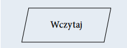
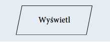
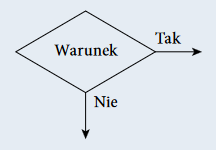
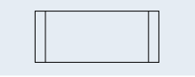
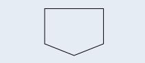

Język programowania służy do tworzenia programów komputerowych, których zada- niem jest przetwarzanie danych, wykonywanie obliczeń i algorytmów. Może zawierać konstrukcje składniowe do manipulowania strukturami danych i zarządzania prze- pływem sterowania. Niektóre języki programowania mają specyfikację swojej składni i semantyki, inne zdefiniowane są jedynie przez oficjalne implementacje.
Elementy języka:
Paradygmaty programowania opisują między innymi programowanie
Skrypt to napisany w języku skryptowym program, który jest wykonywany wewnątrz aplikacji.
Język skryptowy to język programowania służący do wykonywania wyspecjalizowa- nych czynności. Języki skryptowe są tworzone z myślą o interakcji z użytkownikiem. Często są wykorzystywane do zadań administracyjnych. Bywają również osadzane w programach w celu zautomatyzowania powtarzających się czynności. Są używane do tworzenia dynamicznych stron internetowych. Stosowane w grach komputerowych służą do sterowania przebiegiem gry.
Algorytm to zestaw ściśle określonych czynności prowadzących do wykonania pewnego zadania. Określa sposób rozwiązania problemu i ma zastosowanie w różnych dziedzi- nach. Języki programowania to narzędzia, które bardzo dobrze nadają się do zapisu algorytmów. Aby napisać dobry program komputerowy, należy opracować skuteczny algorytm i zdefiniować dla niego odpowiednie struktury danych.
| Symbol | Opis |
|---|---|
| Początek algorytmu, start programu. Od tego miejsca rozpoczyna się wykonywanie operacji. | |
| Koniec algorytmu, zakończenie programu. W tym miejscu nastę- puje zakończenie wykonywania operacji | |
| Połączenie między blokami. Wskazuje kolejność wykonywania operacji. | |
| Wykonanie operacji, blok obliczeniowy. Wewnątrz tego symbolu znajdują się operacje do wykonania. | |
|  | Wprowadzanie danych. Wewnątrz tego symbolu określamy dane wejściowe, które muszą zostać wczytane |
|  | Wyprowadzanie danych. Wewnątrz tego symbolu określamy dane wyjściowe, które powinny zostać wyprowadzone jako wynik |
|  | Warunek logiczny, blok decyzyjny. Umożliwia tworzenie rozga- łęzień w algorytmie. Jeżeli warunek jest spełniony, to następuje przejście do gałęzi oznaczonej „Tak”, w przeciwnym razie nastę- puje przejście do gałęzi oznaczonej „Nie”. |
|  | Proces wstępnie zdefiniowany. Symbol ten oznacza dołączenie podprogramu. |
| Łącznik. Odwołanie na stronie. Służy do oznaczenia miejsc łączenia schematu, na przykład gdyby linie łączące na schemacie musiały się krzyżować | |
|  | Łącznik międzystronicowy. Służy do oznaczenia miejsc łączenia schematu, gdy nie mieści się on na jednej stronie. |